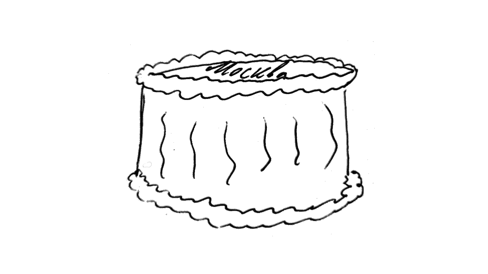

Староселье и торт "Москва"
Подумали мы однажды с Катей, что подустали от городской жизни и хотим попробовать пожить поближе к природе, где-нибудь в Священной Долине. Это недалеко, всего несколько десятков километров от Куско. В основном из-за этого и решили купить машину.
Но задача оказалась не такой уж и простой. Катя на протяжении нескольких месяцев мониторила объявления на запретнобуке. За это время мы посетили, наверное, с десяток вариантов, но в каждом было что-то, что нам не нравилось. И честно говоря, мы уже очень устали от этого процесса и хотели уже отказаться от идеи с переездом.
Но вот неожиданно нашёлся тот самый идеальный вариант, который и находился в хорошем месте, и стоил относительно недорого, и сам при этом был красивым и удобным и с хорошей территорией.
Забронировали этот дом, внесли резерв в пол месяца. Уведомили хозяина текущей квартиры и в целом начали готовиться к переезду. Даже назначили дату новоселья и позвали гостей.
У одного из наших друзей, венесуэльца, мама очень хорошо готовит и любит делать что-то особенное. И он предложил, чтобы она на новоселье приготовила какой-то особенный торт. Ну и я в качестве прикола предложил приготовить торт "Москва".
И тут началось странное. Подошла дата подписания договора с новым домом, но риэлтор сказала, что хозяева перестали выходить на связь. Так, дата переносилась сначала на один день, потом ещё на один, и в итоге мы прождали неделю. А когда хозяин наконец вышел на связь, оказалось, что он решил сдать дом каким-то знакомым.
Депозит вернули, но это вообще не тот результат, который хочешь получить внося депозит за бронирование дома. Мы и так очень устали от поиска дома, и эта ситуация была последней каплей.
В итоге решили не переезжать. К счастью, хозяева текущей квартиры были рады этому и проблем не возникло. И жизнь вроде бы вернулась в своё привычное русло.
И вот, спустя какое-то время, наш венесуэльский друг позвал нас в гости в Урубамбу. И сюрпризом было то, что он с мамой устроили нам староселье 🎉
 Началось всё с кауситы. Основа - картофельное пюре, плюс слои из того что хочется. В данном случае были тунец, авокадо и помидоры.
Началось всё с кауситы. Основа - картофельное пюре, плюс слои из того что хочется. В данном случае были тунец, авокадо и помидоры.


 Потом подошли гарниры
Потом подошли гарниры
 А за ними - форель на каком-то особом соусе из сливочного масла с травами.
А за ними - форель на каком-то особом соусе из сливочного масла с травами.
 Ну красота же!
Ну красота же!
 Хороший мальчик ждал когда же с ним поделяться красотой
Хороший мальчик ждал когда же с ним поделяться красотой
На улице начался сильный дождь с грозой. И пока он шёл, мы наелись от души. За разговорами о погоде и жизни прошло около получаса.
И тут хозяйка говорит, что пришло время десерта и выносит вот это!
 Торт "Москва" собственной персоной!
Торт "Москва" собственной персоной!
Единственное, чего не хватало торту, это фирменной надписи "Москва". Но хозяйка дома не знает русского языка.
Поэтому она решила доверить честь нанесения надписи нам. Точнее, Кате.
Кате выдали пакетик с горячим шоколадом, но это оказалось не так уж и просто. Шоколад быстро остывал и забивал отверстие пакета.
 Вот так получилось
Вот так получилось


Но самое главное - по вкусу торт был идеален!
Так что староселье удалось на славу!
Ну а когда пришло время прощаться, и мы вышли на улицу, увидели вот это.
 Очень мощная и яркая двойная радуга. Наверное, это самая большая и яркая радуга, которую я видел в жизни.
Очень мощная и яркая двойная радуга. Наверное, это самая большая и яркая радуга, которую я видел в жизни.

 Ну и напоследок еще одно фото по дороге в Урубамбу.
Ну и напоследок еще одно фото по дороге в Урубамбу.